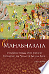
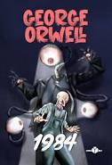

Harry Potter e a Ordem da Fênix

Sinopse
Após um verão desastroso, Harry volta para o seu quinto ano em Hogwarts, um dos mais difíceis que terá de encarar. Pouquíssimos alunos e pais acreditam nele ou em Dumbledore sobre a volta de Voldemort, e uma série interminável de artigos circula dizendo que eles estão completamente malucos. Ainda por cima, Dolores Umbridge, a nova professora de Defesa Contra as Artes das Trevas, prova ser a pessoa mais repugnante que Harry já conheceu.
Fonte: Google Livros
| Data |
Autor |
Idioma Original |
Gêneros |
Número de páginas |
Editora |
| 21 de junho de 2003 |
J. K. Rowling |
Inglês |
Romance, Ficção juvenil, Literatura fantástica |
702 |
Rocco |
O Senhor dos Anéis - O retorno do Rei

Sinopse
O Retorno do Rei A guerra entre os Povos Livres da Terra-média e Sauron, o Senhor Sombrio da terra de Mordor, chega a seu clímax neste terceiro volume do romance O Senhor dos Anéis. As batalhas grandiosas que estão prestes a acontecer, no entanto, são apenas o pano de fundo para o verdadeiro drama: a missão quase suicida dos hobbits Frodo e Sam, que tentam destruir o Um Anel, fonte do poder de Sauron, infiltrando-se no coração do território do Inimigo. Em O Retorno do Rei, acompanhamos o mago Gandalf e o hobbit Pippin em sua visita à a majestosa cidade de Minas Tirith, que já foi o principal baluarte dos Homens contra a ameaça de Sauron, mas que está prestes a sucumbir diante da força avassaladora do Senhor Sombrio. Outros membros da Sociedade do Anel se juntam a Aragorn, herdeiro da longa linhagem dos reis de Minas Tirith, na tentativa de evitar que a antiga capital do reino de Gondor seja destruída. Nas fronteiras de Mordor, Sam resgata Frodo, e os dois hobbits partem para o último estágio de sua jornada rumo ao Monte da Perdição, uma jornada que testará os limites do corpo e da mente dos pequenos heróis. O livro inclui ainda numerosos apêndices, nos quais Tolkien explora detalhes da história, das línguas, dos alfabetos e até dos calendários de seu mundo ficcional.
Fonte: Google Livros
| Data da publicação |
Autor |
Idioma Original |
Gêneros |
Número de páginas |
Editora |
| 20 de outubro de 1955 |
J.R.R. Tolkien |
Inglês |
Fantasia, Literatura fantástica |
528 |
HarperCollins Brasil |
Mahabharata

Sinopse
O Mahabharata é a maior obra literária já produzida na história da humanidade. Composto por cerca de 200 000 versos, o Mahabharata é quatro vezes maior que a Bíblia e sete vezes maior que a Ilíada e a Odisseia, sendo maior que os dois clássicos gregos juntos. Escrito em sânscrito cerca de 2.500 anos atrás, conta a história de uma guerra de poder travada na Índia entre dois clãs, os Pandava e os Kaurava, que culmina numa aterradora batalha apocalíptica. A mais famosa passagem dessa obra é o famoso Bhagavad Gita, lido como uma obra religiosa à parte. O texto apresentado nessa edição não é uma simples tradução, pois se trata da melhor tradução ocidental da obra. William Buck leu todos os onze volumes e mais de cinco mil páginas da tradução inglesa integral do Mahabharata. Antes de terminar a leitura, já tinha decidido se dedicar à árdua tarefa de condensá-lo em prosa, tornando-o acessível e atraente ao leitor contemporâneo. Ele conseguiu captar a combinação de espírito religioso e guerreiro que permeia todo o épico no original, tornando a leitura tão ou mais prazerosa que as obras clássicas da literatura universal.
Fonte: Google Livros
| Data da publicação |
Autor |
Idioma Original |
Gêneros |
Número de páginas |
Editora |
| 14 de julho de 2020 |
William Buck |
Português |
Poema Épico |
368 |
Cultrix |
O Macaco Nú

O Macaco Nú é o título de um livro de Desmond Morris publicado em 1967 que descreve a espécie humana através de uma perspectiva etologista, ou seja, como a que é geralmente adoptada à descrição do comportamento das outras espécies animais.
Fonte: Wikipédia
| Data da publicação |
Autor |
Idioma Original |
Gênero |
Número de páginas |
Editora |
| 1967 |
Desmond Morris |
Inglês |
Antropologia |
188 |
Record |
1984

Sumário
Obra máxima de George Orwell, 1984 é um dos livros mais influentes do século 20. Eternizada pela crítica ao totalitarismo e à usurpação dos direitos individuais, esta distopia assustadora marcou toda uma geração de leitores. Em uma sociedade extremamente regulada e aterrorizada por um regime totalitário, Winston Smith se sente encurralado. Funcionário público no Ministério da Verdade, onde trabalha alterando documentos para atender aos interesses do Partido, ele se vê desiludido com o sistema e com a própria existência. O desejo de se rebelar, porém, esbarra na constante vigilância das teletelas e no aparato repressivo do governo, que transformou a liberdade e a individualidade em crimes e persegue quem ousa desafiar as suas regras. Ao se aventurar em um romance secreto com Julia, com quem partilha o desprezo pelo Partido, Winston percebe que sua ânsia pela verdade pode se tornar uma possibilidade real de mudança. Mas combater o regime não será nada fácil, e o Grande Irmão cobrará seu preço.
Fonte: Google Livros
| Data da publicação |
Autor |
Idioma Original |
Gêneros |
Número de páginas |
Editora |
| 1949 |
George Orwell |
Inglês |
Ficção Científica Social, Ficção distópica, Ficção Política |
400 |
Aleph |